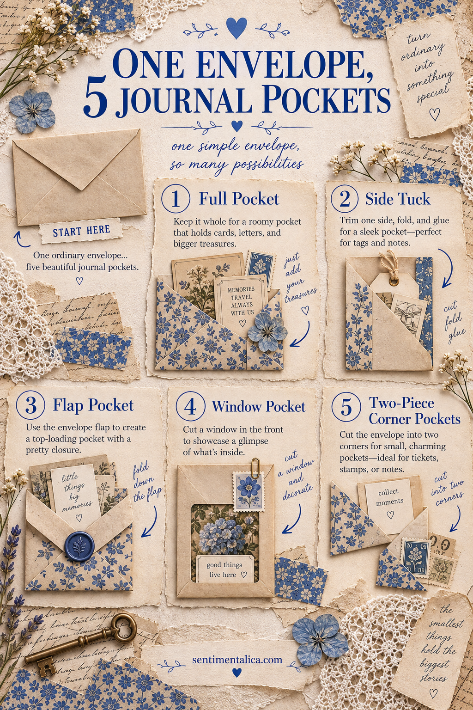
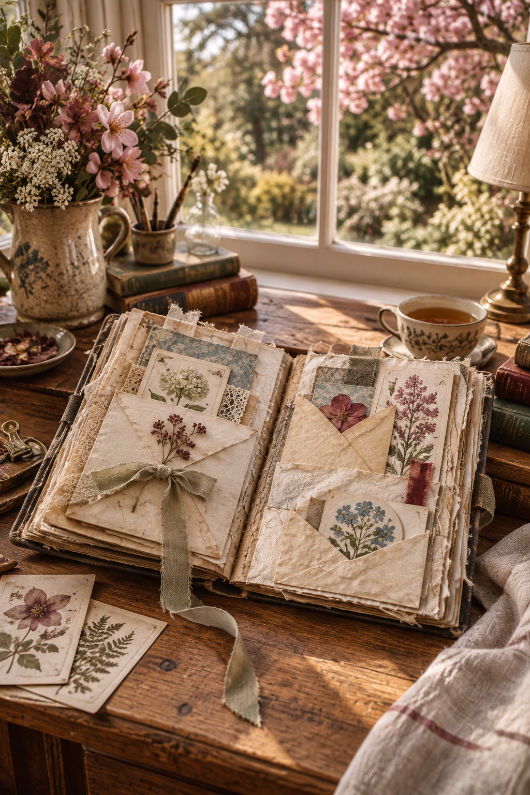

An envelope is already halfway to becoming a journal pocket: it has folds, a flap and a ready-made opening. Instead of using every envelope in the same way, let its position and cuts decide what it can hold.
These five variations work with mail envelopes, handmade envelopes and small gift-card envelopes. Use one idea at a time, or cut a single large envelope into several smaller pockets.
Prepare the envelope
If the envelope has been mailed, remove personal information and shake out any grit. Ease a letter opener beneath glued areas you want to preserve. Reinforce tears from the inside with a narrow strip of lightweight paper.
Before attaching anything, slide in the item you expect the pocket to hold. Add at least 3 mm of ease around it. A pocket that looks perfect when empty may be too tight once glue narrows the opening.
Pocket 1: The full-envelope holder
Keep the envelope intact and glue its back to the journal on three sides, leaving the top or outer edge free. You now have two storage places: the envelope interior and the space behind it.
Use the inner pocket for private journaling or photographs. The rear tuck is ideal for a larger card that should remain visible.
Pocket 2: The side tuck
Seal the envelope, then trim away one short edge. Rotate it so the new opening faces the outside of the page. Glue the other three edges down.
Cut a shallow thumb notch if the contents disappear too deeply. A side tuck works especially well near the edge of a signature because cards can slide out without fighting the spine.
Pocket 3: The flap pocket
Cut the envelope body away about 2 cm below the fold of the flap. Keep the flap and its narrow strip of backing paper as one piece. Glue the strip to the page and leave the flap loose, creating a small hinged pocket.
Add a paper tab or ribbon loop. This little pocket suits a tiny note, stamp, pressed petal or one-line memory.
Pocket 4: The window pocket
If your envelope has a transparent address window, make it the feature. Trim the envelope to a pleasing rectangle, leaving a border around the window. Seal unwanted openings, then glue three edges to the page.
Place a colorful card inside so one detail shows through. If the original plastic is cloudy or damaged, remove it and back the opening with vellum.
Pocket 5: Two corner tucks
Cut the envelope diagonally from one corner to the opposite corner. Each triangular half can become a corner pocket. Glue only the two straight outside edges, keeping the diagonal open.
Corner tucks are useful for holding a label without covering the center of the page. They also balance a spread when one side already has a large focal element.

Decorate without blocking the function
Put bulky embellishments away from the opening. Keep lace, seals and raised clusters on the closed edge so cards do not catch. If the envelope is visually busy, cover only part of it with one calm torn strip rather than hiding every mark.
Test the pocket again after the glue dries. If it feels tight, insert a bone folder and gently open the seam—never force the card.

The most useful pocket is the one you will actually reach into. Choose the opening direction first, protect a little space for movement, and let the envelope’s existing structure do most of the work.